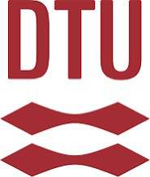
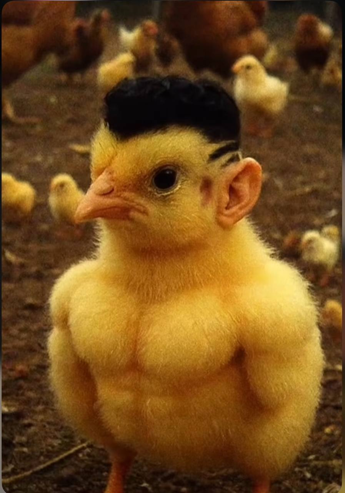

En dag hvor vi ikke snakker om AI — vi bygger med den.
Hvem er Omar, og hvorfor AI?
Server, LLM, agent, harness
Gratis AI'er mens du installerer
Trash in / trash out
Det vi har installeret
Site · Webshop · App · Spil
Og så er det bare at gå i gang
Få prompts med hjem
I dag handler det ikke om at lære teorien. Det handler om at komme i gang.

Hvor jeg lærte at tænke som ingeniør

Jeg kan godt lide mærkelige billeder 😼
Du behøver ikke forstå det fuldt ud. Bare nok til at være med.
Downloads tager tid. Lad os ikke spilde den.
En AI gør præcis det du beder om — hverken mere eller mindre
Kort forklaret. Ingen tech-snobs.
Én nøgle der giver adgang til mange AI-modeller. Gratis i dag, så brug det.
Google Drive for kode. Men bedre — millioner af udviklere deler gratis projekter du kan bruge.
Word for kode. Åbner alle slags filer. Her kører du din AI-agent.
Vores AI-agent. Kan styres fra telefonen. Bliver bedre for hver dag du bruger den.
Scan QR → kopiér prompt → start
Jeg kigger rundt. Spørg når I er kørt fast.
Skriv præcis hvad du prøvede og hvad der skete. Fejlmeddelelser er guld.
Alt på GitHub er gratis og delt af folk der elsker at hjælpe. Bidrag selv når du kan.
Kom til mig — jeg har en gratis nøgle til jer i dag 😼
Scan QR → gem prompts.html i bogmærker → brug det i næste uge.
Scan og gem prompts.html